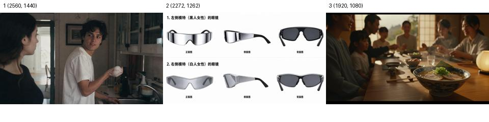

Does ComfyUI match preserve quality?
Native reference dimensions, match to the output area, and the historical forced upscale. One three-image prompt · seeds 0, 1, 2 · 832 × 480 output · 124 frames at 24 FPS.
Every clip uses the same single RTX PRO 5000 deployment: NVFP4 QAD, CAKE INT8 Q/K + FP8 V, 36L decoder and DiT + encoder layerwise offload. Only reference-image preprocessing changes. Native-size layerwise outputs were generated specifically for this comparison.
The same source references

| Image | Native source | Match | Historical upscale |
|---|---|---|---|
| Person | 2560 × 1440 | 832 × 480 | 3648 × 2048 |
| Sunglasses | 2272 × 1262 | 832 × 480 | 3680 × 2048 |
| Room | 1920 × 1080 | 832 × 480 | 3648 × 2048 |
Native preprocessing rounds dimensions to the nearest 32: the actual encoder canvases are 2560 × 1440, 2272 × 1248, and 1920 × 1088. Generated video dimensions remain fixed for all three policies.
Inspect matched seeds
Inspect the person’s appearance, sunglasses, scene layout, gestures, motion and audio. Policy labels start hidden; reveal them after viewing. A/B/C positions vary by seed. This viewer does not constitute a completed human blind study.
Quality proxies, kept separate from speed
These are uncalibrated similarity and temporal diagnostics, not quality percentages or official VBench scores. The mean is over three clips. “Match − native” uses paired seed differences; the 95% t interval has only two degrees of freedom. A confidence interval crossing zero does not establish equivalence.
| Metric | Native | Match | Upscaled | Match − native | 95% paired interval |
|---|
Metric definitions and limits
- Person and sunglasses: DINOv2 similarity from fixed crops of the original references to the best of ten fixed windows in each sampled output frame. This does not verify exact identity or fine product geometry.
- Scene: DINOv2 similarity between the original full room reference and sampled output frames.
- Semantic: CLIP cosine against fixed concise descriptions; it does not prove that the requested action sequence occurs.
- Temporal DINO: similarity between adjacent sampled frames. More static content can score higher.
- Motion and warp residual: optical flow across all adjacent frame pairs at 208 × 120. Camera motion and occlusion affect both, so neither is treated as a universal quality rating.
- Audio, speech correctness, lip sync and overall aesthetic quality are not scored by these automatic metrics. Use the original MP4 playback.
Method references: VBench-I2V dimensions, DINOv2, CLIP. This custom multi-reference pilot uses its own crops and aggregation and is not a VBench implementation.
Serving cost under the same configuration
| Policy | Mean end-to-end · s | Peak GPU · GiB | Config |
|---|
Visual review and adoption decision
Prefer match only after the relevant workload passes a quality check. This pilot covers one prompt and three seeds. It does not justify a global “no quality loss” default. Reference detail, action completion, temporal defects and audio must all be checked; a faster run or a higher stability score cannot substitute for those checks.